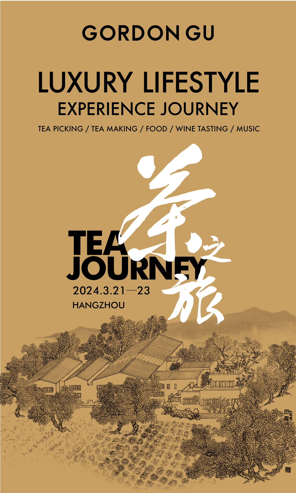
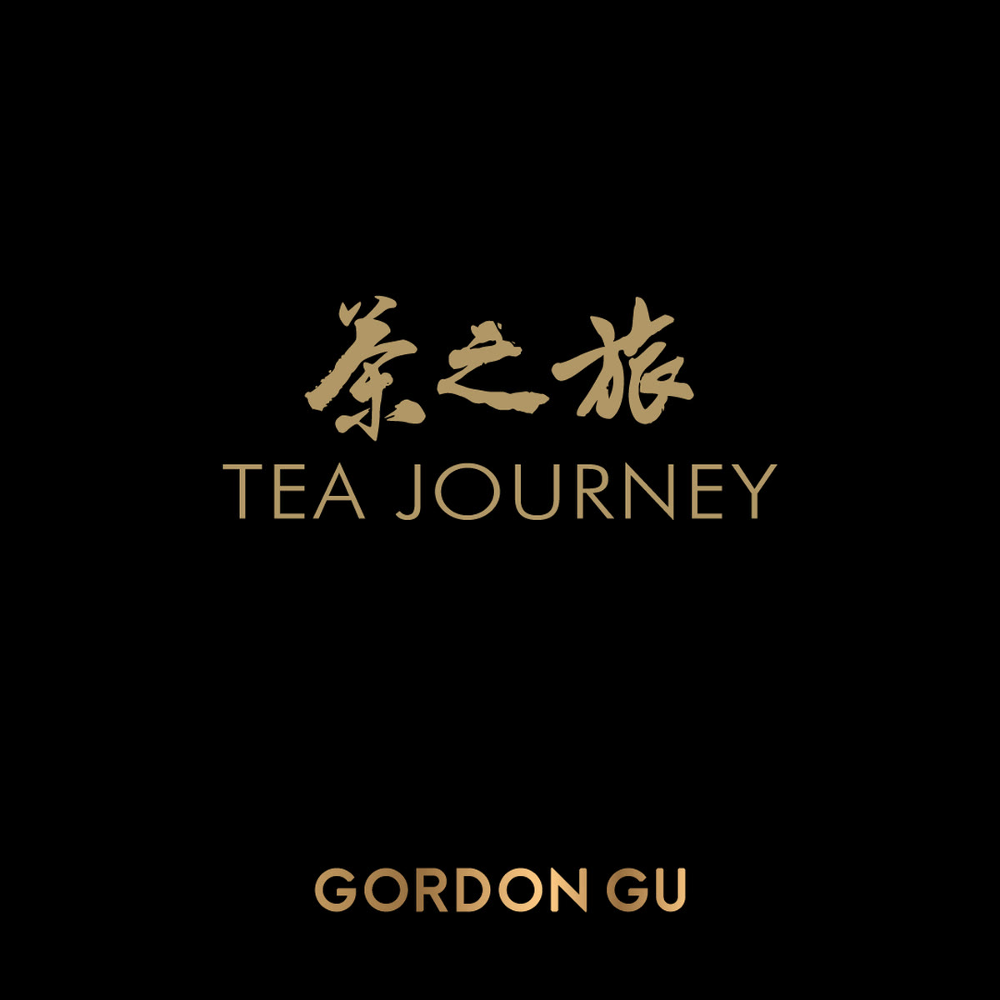
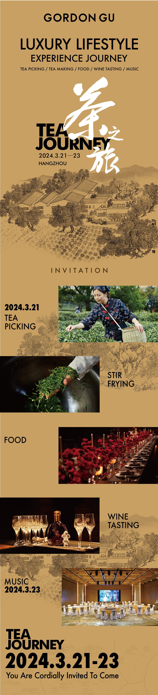
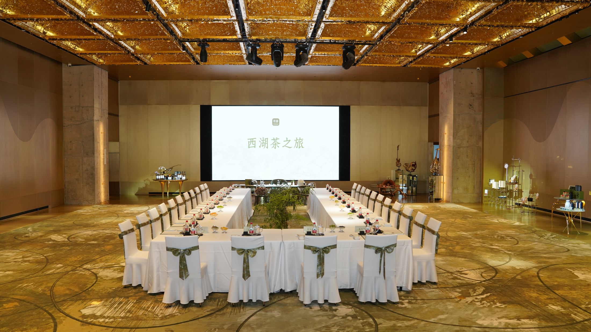
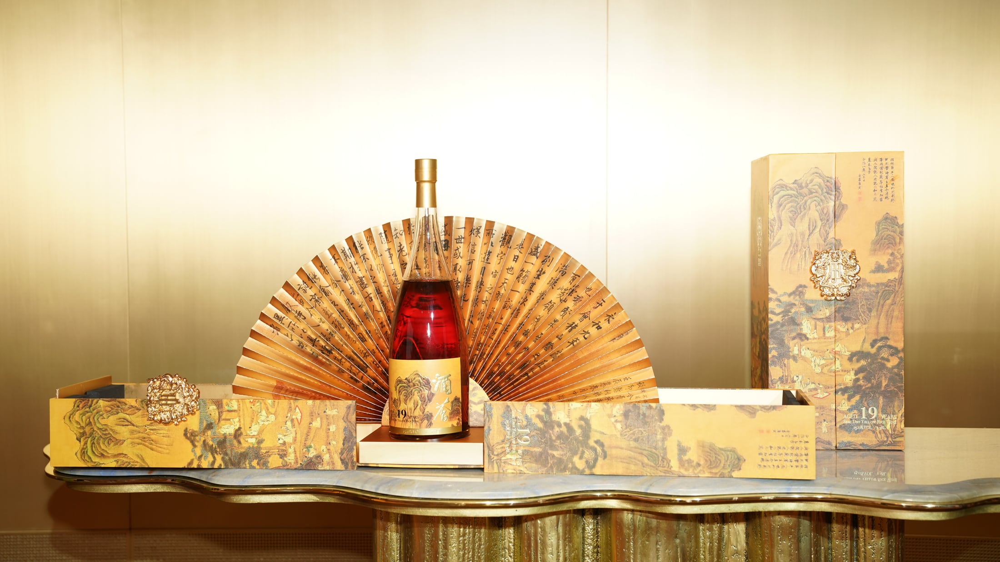
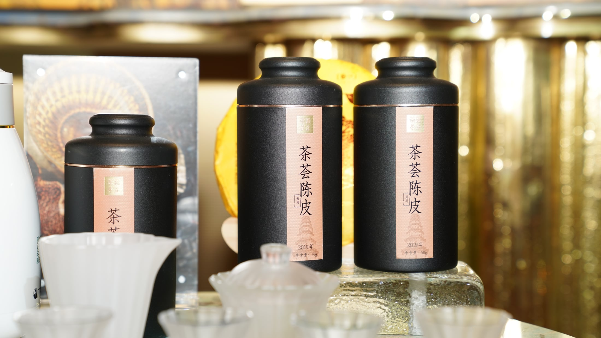
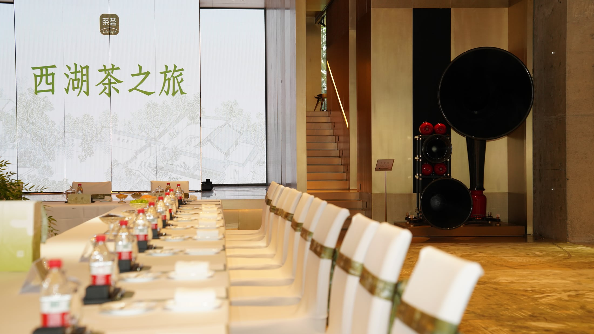

茶之旅
01
项目概述
ABOUT THE EVENT
以茶为媒介，
让品牌与来宾相遇。
“茶之旅”是在杭州分批举办的品牌活动。不同日期对应不同批次来宾，活动通过茶文化体验、品牌空间与交流晚宴建立完整的线下感受。
我负责活动 Logo、邀请函与公众号内容设计，并参与现场拍摄和视频剪辑。页面所示家具、艺术装置及空间设计不属于我的设计范围。
02
活动识别
TEA JOURNEY IDENTITY
一枚识别，贯穿每次相聚。
“茶之旅 / TEA JOURNEY / GORDON GU”作为活动的共同识别，延展到邀约、内容传播与现场影像中。

03
活动触点
BEFORE THE GATHERING
从一份邀约，
开始进入活动。

查看完整邀请函 ↗2024.03.21—23 / HANGZHOU
邀请函负责把活动内容，
提前变成可以感知的体验。
以麦金色、杭州园林线描、黑色粗体英文和现场纪实照片，串联采茶、制茶、餐叙、品酒与音乐等活动环节。
- 活动主视觉与 Logo 应用
- 活动流程与日期信息
- 纪实图片与内容编排
04
活动影像
ONE SELECTED FILM
一支影像，记录一次完整相聚。
从抵达、观展、茶席到晚宴，以一支精选短片呈现活动的空间、人物和情绪变化。
05
活动记录




06
个人职责
MY CONTRIBUTION
从活动信息到现场影像，
建立连贯的内容触点。
- 01活动 Logo
- 02邀请函与公众号内容
- 03现场拍摄
- 04素材筛选与视频剪辑
GORDON GU · TEA JOURNEY